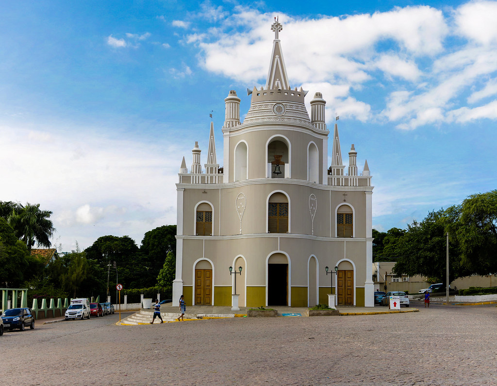
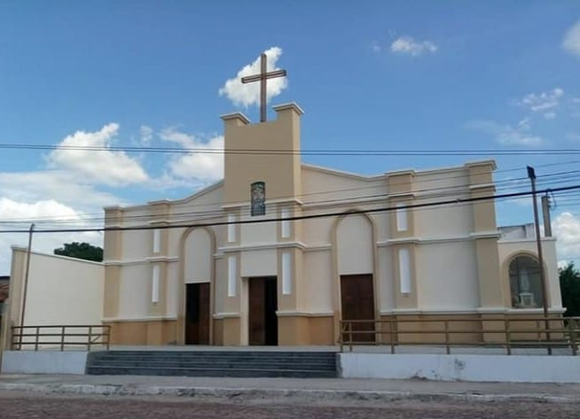

INÍCIO
CRATO
JUAZEIRO DO NORTE
BARBALHA
Locais Religiosos
Locais Turísticos
Restaurantes e Bares
Hotéis e Pousadas
Categorias
Locais Religiosos
Locais Turísticos
Restaurantes e Bares
Hotéis e Pousadas

Igreja Nossa Senhora do Rosário
Mais Informações
Igreja de Santo Antônio
Mais Informações
Mais Informações

Paróquia São Vicente de Paulo
Mais Informações
Mais Informações